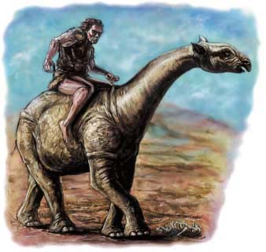

超大型动物

| 生命骰： | 16d8+112 (177 生命值) |
| 先攻： | +4 |
| 速度： | 40 英尺 |
| 防御等级： | 19 (�C2 体型，+11 天生护甲)，接触 8，措手不及 19 |
| 基本攻击／擒抱： | +12/+31 |
| 攻击： | 头槌 +22 近战 |
| 全力攻击： | 头槌 +22 近战 及 2 次践踏 +16 近战 |
| 伤害： | 头槌 2d6+11/19�C20，践踏 2d6+5 |
| 面宽／触及： | 15 英尺/10 英尺 |
| 特殊攻击： | 击退，踩踏 2d8+16 |
| 特殊能力： | 黑暗视觉 60 英尺，微光视觉，灵敏嗅觉 |
| 豁免： | 强韧 +19，反射 +10，意志 +7 |
| 属性： | 力量 33，敏捷 10，体质 25，智力 2，感知 14，魅力 9 |
| 技能： | 聆听 +14，侦察 +13 |
| 专长： | 警觉，战斗反射，强韧加强，精通重击（头槌），精通先攻，武器专攻（头槌） |
| 地域： | 任意森林、丘陵或平原 |
| 组织： | 独行，成对，或群 (3�C12) |
| 挑战等级： | 9 |
| 宝物： | ― |
| 阵营： | 总是中立 |
| 进化： | 17�C31 HD（巨型）；32�C48 HD（超巨型） |
重脚兽虽然是严格的食草动物，但却是危险且不可预测的生物。它们庞大的体型使其对共享栖息地的任何其他事物都构成威胁，而且它们能够快速剥除大片植被的能力，可能会永久性地改变周边地形的生态。
一只重脚兽的体重是大象的两倍，其长颈的高度可与长颈鹿匹敌。一只成年重脚兽肩高约 15 英尺，头顶高约 23 英尺。它厚实的灰色兽皮与其厚皮类近亲相似，其巨大的脚也是如此。
当因交配季节来临、保护后代的渴望或战争训练而被激怒时，重脚兽能造成巨大的破坏。已知一些山丘巨人、食人魔甚至巨魔部落会驯化这些生物，并将它们训练成坐骑。目睹十几名巨人骑乘在这些庞然大物上，已使不止一支敌军在战斗开始前便掉头逃跑。
野生的重脚兽在战斗中只求生存。然而，这并不意味着重脚兽会采取纯粹的防御姿态。如果无法逃离，重脚兽会用头部猛烈攻击，试图将对手击退。它的长颈使其头槌威力十足。重脚兽也使用其脚作为强力武器，通过践踏并将敌人踩成肉泥。
使用重脚兽作为坐骑的巨人会采用一种有效的变体战术――强迫坐骑进入敌人可触及范围，随后重脚兽使用头槌并可能紧接着尝试击退（见下文）。如果击退成功，当敌人离开两个生物的威胁区域时，巨人和重脚兽都会利用此机会进行借机攻击。
击退 (Knock Back)（Ex）：被重脚兽头槌击中的生物必须通过强韧豁免检定（DC 29），否则会被击退 10 英尺。如果目标无法被击退 10 英尺，则改为倒在地上。如果第一次豁免失败，目标必须再通过一次强韧豁免（DC 29），否则将震慑 1 轮。
踩踏 (Trample)（Ex）：作为一个标准动作，重脚兽可以踩踏比它至少小一个体型类别的对手。此攻击造成 2d8+16 点钝击伤害。被踩踏的对手可以尝试进行一次借机攻击（承受�C4罚值）或进行一次反射豁免（DC 29）以使伤害减半。
灵敏嗅觉 (Scent)（Ex）：重脚兽可以察觉接近的敌人、嗅出隐藏的敌人并通过嗅觉进行追踪。